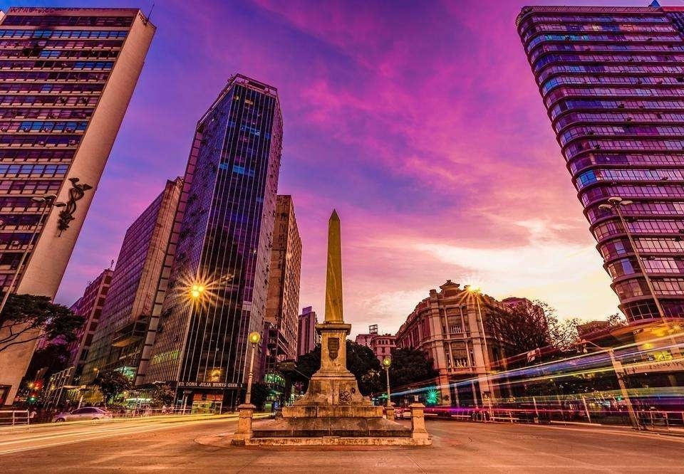
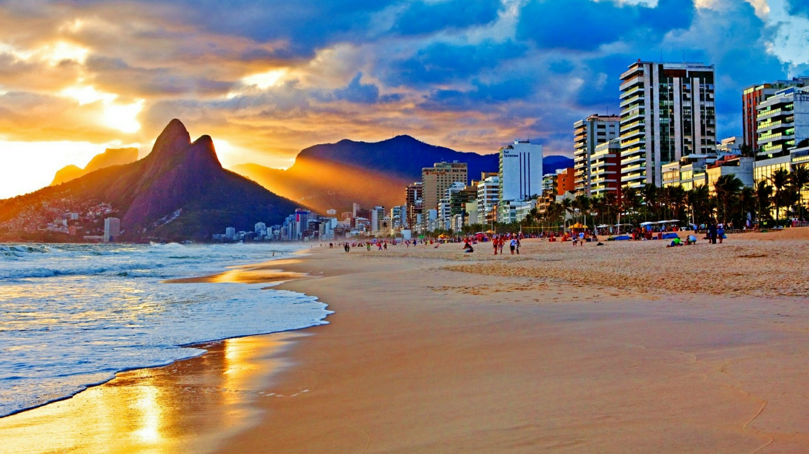
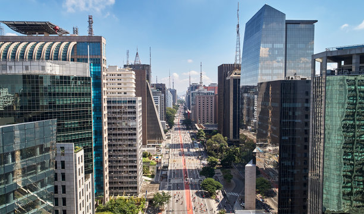
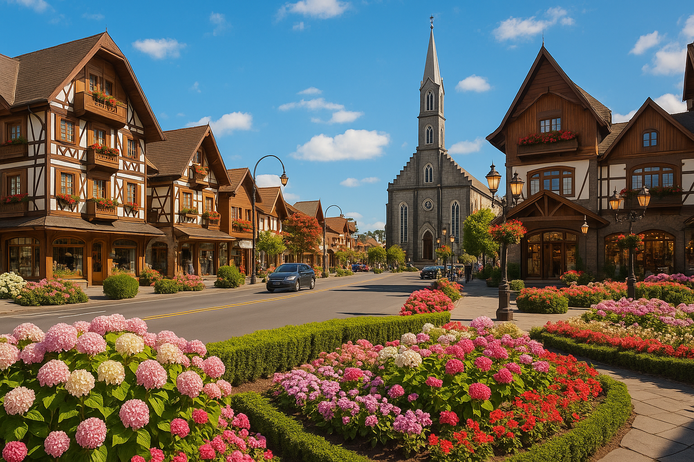
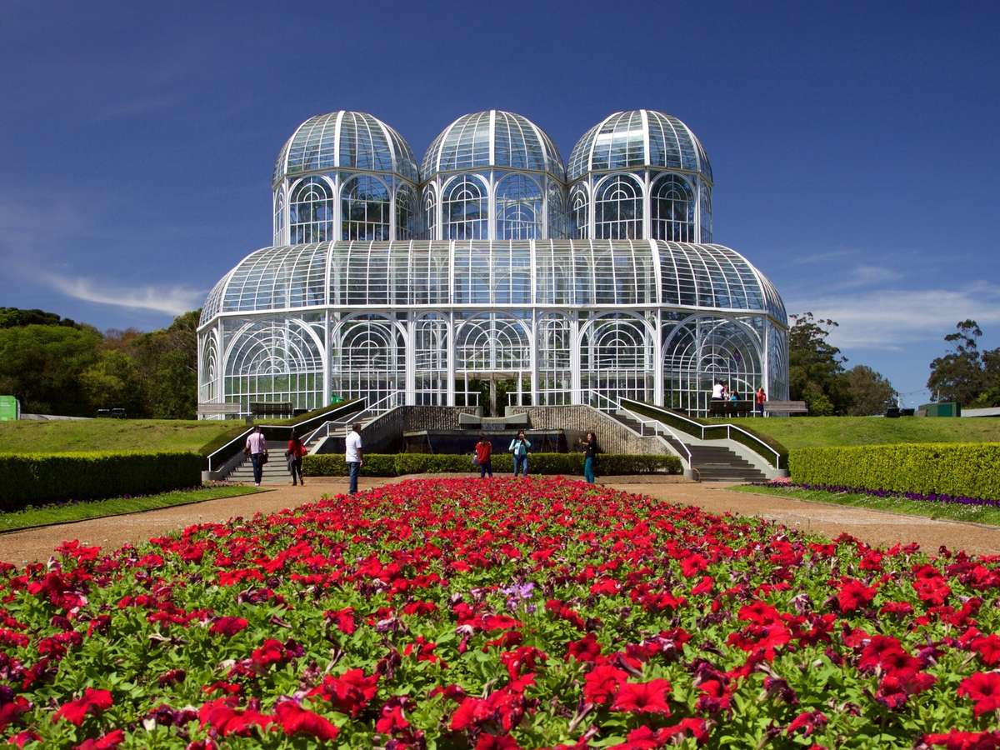

Rota Destinos Brasil: “Uma jornada pelos cenários mais marcantes do país, onde paisagens, culturas e experiências revelam a verdadeira essência do Brasil.”
MG - Belo Horizonte

Belo Horizonte, capital de Minas Gerais, é conhecida por sua rica cultura, gastronomia marcante e hospitalidade acolhedora. A cidade combina tradição e modernidade, oferecendo uma atmosfera vibrante que encanta moradores e visitantes. Suas belas paisagens urbanas se destacam pela harmonia entre arquitetura, áreas verdes e montanhas ao redor, criando cenários únicos. Além disso, Belo Horizonte possui uma vida noturna animada, com bares, restaurantes e eventos culturais espalhados por diversos bairros. A cidade também se destaca como um importante polo gastronômico do país, famosa por pratos típicos como pão de queijo, feijão tropeiro e doce de leite, que refletem a identidade mineira. Entre seus principais pontos turísticos está o conjunto arquitetônico da Pampulha, projetado por Oscar Niemeyer, que reúne obras icônicas e é reconhecido como Patrimônio Cultural da Humanidade. Outros atrativos incluem parques, museus e feiras tradicionais, como a Feira de Artesanato da Afonso Pena, que evidenciam a diversidade cultural da cidade.Com seu clima agradável e povo receptivo, Belo Horizonte se firma como um destino completo, ideal tanto para quem busca lazer quanto para quem deseja conhecer mais sobre a cultura e as tradições brasileiras.
RJ - Copacabana

Copacabana é um dos destinos mais famosos do Brasil, localizado na vibrante Rio de Janeiro. Conhecido mundialmente por sua praia de águas claras e areia branca, o bairro encanta visitantes com sua beleza natural e atmosfera única. Seu calçadão icônico, com o tradicional desenho em ondas portuguesas, é um dos símbolos mais reconhecidos do país. Além da paisagem deslumbrante, Copacabana oferece uma experiência completa para turistas. A região conta com uma ampla variedade de hotéis, restaurantes, quiosques e bares à beira-mar, proporcionando lazer tanto durante o dia quanto à noite. É um lugar ideal para relaxar, praticar esportes como vôlei e futevôlei, caminhar pela orla ou simplesmente apreciar o pôr do sol.O bairro também é palco de grandes eventos, como a tradicional festa de Réveillon, que reúne milhões de pessoas todos os anos em uma das maiores celebrações de Ano Novo do mundo. Com sua energia vibrante, diversidade cultural e infraestrutura turística, Copacabana se destaca como um destino imperdível para quem deseja conhecer o melhor do turismo brasileiro.
SP - São Paulo

São Paulo é a maior cidade do Brasil e um dos principais centros culturais, financeiros e econômicos da América Latina. Conhecida por sua grandiosidade e diversidade, a metrópole oferece uma experiência única, onde diferentes culturas, estilos e tradições se encontram em um só lugar. A cidade se destaca pela sua enorme variedade gastronômica, considerada uma das mais ricas do mundo, com restaurantes que representam cozinhas de diversos países, além de pratos típicos brasileiros. São Paulo também abriga museus renomados, como o Museu de Arte de São Paulo Assis Chateaubriand (MASP), famoso por seu acervo e arquitetura marcante, e o Museu do Ipiranga, que conta a história do Brasil. Além disso, a cidade possui uma vida urbana intensa, com teatros, shows, exposições, parques e uma agenda cultural ativa durante todo o ano. Regiões como a Avenida Paulista são verdadeiros cartões-postais, reunindo cultura, lazer e entretenimento. Com sua energia dinâmica e infinitas possibilidades, São Paulo é um destino ideal para quem busca experiências urbanas completas e inesquecíveis.
RS - Gramado

Gramado, localizada no Rio Grande do Sul, é um dos destinos turísticos mais encantadores do país, famosa por seu clima europeu, arquitetura charmosa e atmosfera acolhedora. A cidade conquista visitantes com suas ruas bem cuidadas, jardins floridos e construções inspiradas no estilo alemão e italiano, criando um cenário digno de filme. Gramado é especialmente conhecida por seus eventos ao longo do ano, com destaque para o Natal Luz, que transforma a cidade em um verdadeiro espetáculo durante o período natalino, com luzes, shows e desfiles temáticos que atraem turistas de todo o Brasil e do exterior. Outro evento importante é o Festival de Cinema de Gramado, um dos mais tradicionais do país. Além disso, a cidade oferece diversas opções de lazer, como parques temáticos, museus, fábricas de chocolate artesanal e passeios românticos, ideais para casais. A gastronomia também é um grande atrativo, com cafés coloniais, fondues e pratos típicos da culinária europeia. Com seu clima agradável, paisagens deslumbrantes e infraestrutura turística de qualidade, Gramado se destaca como um destino romântico e sofisticado, perfeito para quem busca descanso, cultura e experiências inesquecíveis.
PR - Curitiba

Curitiba, capital do Paraná, é reconhecida nacional e internacionalmente como referência em urbanismo, sustentabilidade e qualidade de vida. A cidade se destaca por seu planejamento urbano inovador, transporte público eficiente e preocupação com o meio ambiente, tornando-se um modelo para diversas cidades ao redor do mundo. Um dos maiores atrativos de Curitiba são seus parques e áreas verdes, que proporcionam lazer e contato com a natureza em meio ao cenário urbano. Entre eles, destaca-se o Jardim Botânico de Curitiba, famoso por sua estufa de vidro inspirada nos jardins franceses e por seus belos jardins geométricos, sendo um dos cartões-postais mais visitados da cidade. Além disso, Curitiba oferece uma rica programação cultural, com teatros, museus e espaços históricos, como a Ópera de Arame e o Museu Oscar Niemeyer. A cidade também possui uma gastronomia diversificada, influenciada por diferentes culturas de imigrantes. Com sua organização urbana exemplar, limpeza, segurança e qualidade de vida, Curitiba atrai visitantes de todo o país que buscam uma experiência tranquila, moderna e bem estruturada, unindo natureza, cultura e inovação.
BA - Salvador
Salvador, capital da Bahia, é uma das cidades mais ricas em cultura, história e tradição do Brasil. Considerada o berço da cultura afro-brasileira, Salvador encanta visitantes com sua energia única, marcada por música, dança, religiosidade e manifestações culturais que fazem parte do seu cotidiano. Um dos maiores destaques da cidade é o Pelourinho, centro histórico reconhecido como Patrimônio Mundial, com suas ruas de paralelepípedo, casarões coloridos e igrejas históricas que contam a história do período colonial brasileiro. Caminhar por essa região é como voltar no tempo e vivenciar a essência cultural da cidade. Salvador também é mundialmente conhecida por seu carnaval, considerado um dos maiores do planeta, reunindo milhões de pessoas em uma celebração vibrante repleta de trios elétricos, música e alegria. Além disso, a culinária baiana é um espetáculo à parte, com pratos típicos como acarajé, moqueca e vatapá, que refletem a forte influência africana. Com suas praias paradisíacas, clima tropical e povo acolhedor, Salvador se destaca como um destino completo, ideal para quem busca cultura, história, lazer e experiências inesquecíveis em um dos lugares mais vibrantes do Brasil.